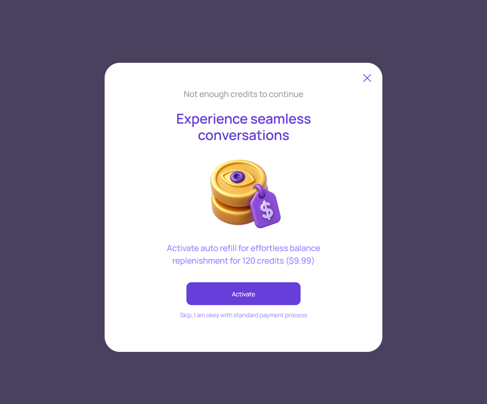

Недостаточно кредитов / auto-refill
account/insufficient-credits.html
Предложить подключение auto-refill либо обычную покупку.
| Когда открывается | Баланс не покрывает следующую оплачиваемую часть |
|---|---|
| Данные | Баланс; pause state; условия auto-refill; eligibility. |
| Сценарий | Activate → явное согласие на условия и подтверждение; Skip → обычный выбор пакета. |
| Переходы | Пополнение для продолжения · Автопополнение |
П07: условия, порог и лимиты должны быть согласованы до реализации реальных автосписаний.
Общая и предметная логика. Снимки и подписи элементов — исходная редакция макета; поздние уточнения ТЗ имеют приоритет в своей области. Это не проверка текущего сайта.
Сопоставление с AskNebula
Существующие наблюдения 07–09.10.2026, без повторной проверки в этой передаче.
Нужна отдельная сверка соответствующего экрана/состояния референса. Отсутствие аналога не установлено.
Состояние 1280 · 1280 × 1062


Элементы и ожидаемые действия
| Элемент | Название в макете | Действие | Ожидаемый результат |
|---|---|---|---|
| E001 Скрыт в этом состоянии | Balance pause status | Информационный блок/область фокуса, не самостоятельная команда. | Показывать актуальные данные соответствующего сценария; фокус или чтение не выполняют мутацию. |
| E002 Виден | Close insufficient credits offer | Закрыть локальное окно или вернуться к инициатору; Stay отменяет намерение завершить. | Вернуть фокус и исходный контекст. Не выполнять оплату, удаление или Complete. При неизвестном результате платежа сначала сверить заказ. |
| E003 Виден | Activate | Предложить/сохранить отдельное разрешение на автопополнение по утвержденным условиям. | Нужны пакет, сумма, порог и лимит; включение не равно обычной покупке или началу консультации. |
| E004 Виден | Skip, I am okey with standard payment process | Отклонить auto-refill и открыть обычную покупку пакета. | Автопополнение не подключается; диалог и пауза сохраняются. |
Состояние 390 · 390 × 1062

Элементы и ожидаемые действия
| Элемент | Название в макете | Действие | Ожидаемый результат |
|---|---|---|---|
| E001 Скрыт в этом состоянии | Balance pause status | Информационный блок/область фокуса, не самостоятельная команда. | Показывать актуальные данные соответствующего сценария; фокус или чтение не выполняют мутацию. |
| E002 Виден | Close insufficient credits offer | Закрыть локальное окно или вернуться к инициатору; Stay отменяет намерение завершить. | Вернуть фокус и исходный контекст. Не выполнять оплату, удаление или Complete. При неизвестном результате платежа сначала сверить заказ. |
| E003 Виден | Activate | Предложить/сохранить отдельное разрешение на автопополнение по утвержденным условиям. | Нужны пакет, сумма, порог и лимит; включение не равно обычной покупке или началу консультации. |
| E004 Виден | Skip, I am okey with standard payment process | Отклонить auto-refill и открыть обычную покупку пакета. | Автопополнение не подключается; диалог и пауза сохраняются. |